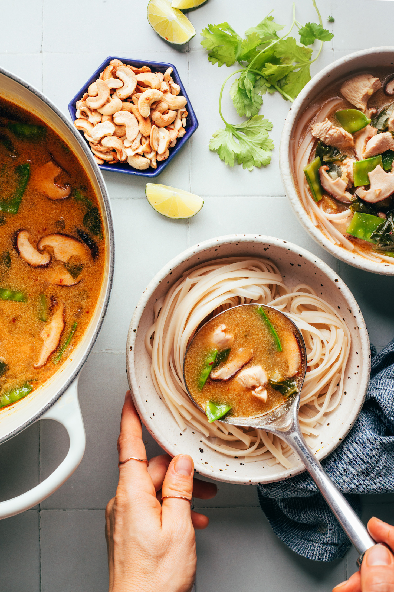

Cooler weather means one thing: cozy soups on repeat! Our new go-to is this Thai-inspired noodle soup with coconut milk, curry paste, veggies, and your choice of chicken or tofu. It’s creamy, gingery, spicy, nourishing, and SO satisfying! Bonus? It’s versatile, working well with almost any veggies you have around! Simple methods. Big flavor. Let’s do this!
Comforting, Thai-inspired noodle soup with bok choy, mushrooms, and chicken or tofu. A versatile, veggie-packed meal ready in 30 minutes!
15 minutes
15 minutes
30 minutes
Servings: 5
Course: Entrée, Soup
Cuisine: Dairy-Free, Gluten-Free, Vegan (optional)
Freezer Friendly: 1 Month (without noodles)
Note: No digas "hago más así sobra" pues no te va a sobrar ni uno.